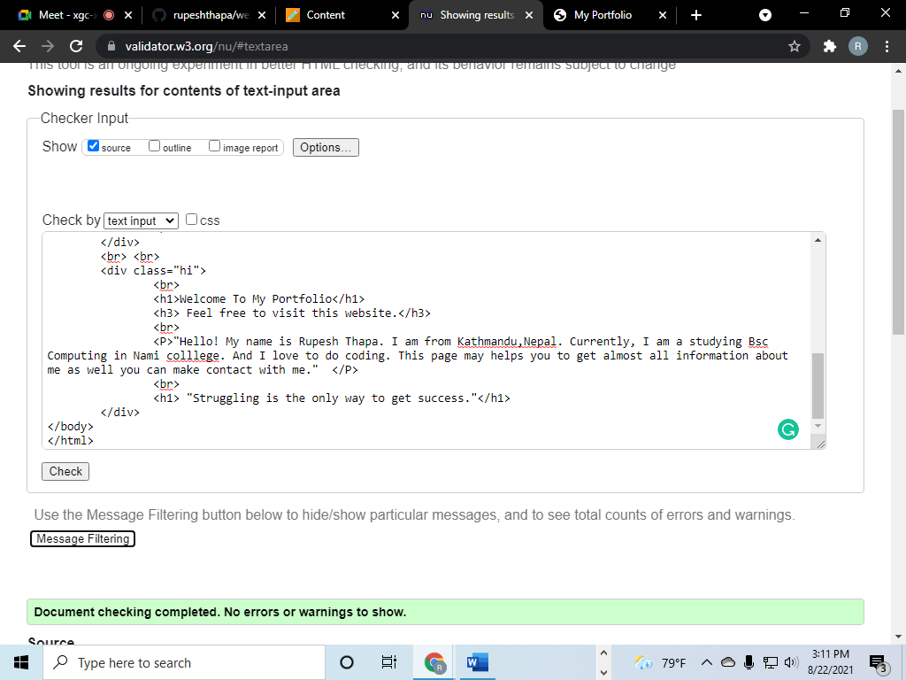
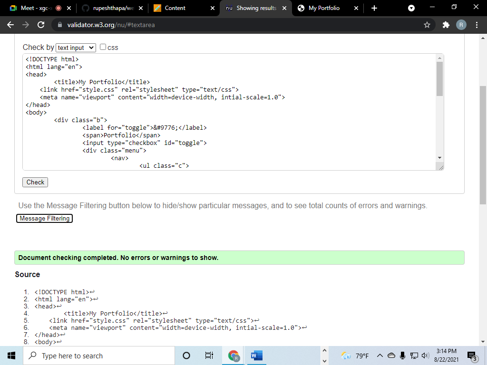

MY PORTFOLIO
By: Rupesh Thapa| Student
Date:
This is an assignment provided by University of Northampton via Nami College to every individual students of Bsc Computing. It was given in 11 may 2021A.D. Objective of this assignment was to check whether students are capable or not to create a webpage using HTML and CSS along with managing code using Git/GitHub.
To be honest, this assignment was a headache but after starting, it was very fun. It helped to learn so many things related to coding. There was a little bit struggle to start and so much scuffle to search proper way to do it. And after it was started, whenever coding process was not going smoothly as hoped, it used to be so mundane but when it went in a flow and everything was accurate it makes feel so cheerful and built a desire to do more.
First of all, the lecutre and the tutorail which were taught and done in the college helped alot and besides that some of the websites and online tutorial gave some tips to complete this assignment. Module tutor (Mr. Thapa) used to provide slides of a lecture which was very beneficial. Without that slides it was almost impossible to design this webpage. While having discussion on the topic, "how to do?" it was difficult to understand about placeholder images but Mr. Thapa shared his knowledge so smoothly showing his patience.
Here are some of the explanations of designs, fonts, colors and links which were used to make this webpage:
Navigation Bar:
Like, for every websites navigation bar is mandatory and here is also navigation bar avialable to visit different pages(Home, Portfolio, Contact, CV, Sitereport). And the bars are in black color having equal font sizes along with active class and hover. In this part, background color looks like skyblue color i.e. '#00a3cc' color code and makes attractive and heading style which is Portfolio of left hand side was choosen from online tutorial.
Reference:
Coding Nepal(2019) How to Create Responsive Navigation Bar using HTML and CSS? YouTube[Online]. Avialable from: 'https://www.youtube.com/watch?v=oLgtucwjVII' [Accessed 16 May 2021].
Animation:
Portfolio of left hand side is a heading with a little bit of animation which turns slowly into white from black. This animation is a best part of this webpage and was a little tough to do it. For animation a shor video helped me a lot.
Reference:
DarkCode (2018) Simple Text Animation Just By Using HTML & CSS YouTube [Online]. Avialable from: 'https://www.youtube.com/watch?v=Syg_9iB1vco' [Accessed 23 May 2021]
Hamburger Icon with Responsive Menu along with Media queries:
This was the most difficult part. There was so much struggle to do it. It was like breaking hills. Looked several videos, sites but still was not able to find proper way to do it. At last, one of the friend suggested one video which was too good to do it. To create the icon there was a code was not written on own.
Reference:
Edwards(2017) Responsive Menu With Media Queries (Checkbox Trick) - Using Only CSS3 YouTube[Online]. Avilable from: 'https://www.youtube.com/watch?v=xMTs8tAapnQ' [Accessed 28 May 2021]
Deshar (2021) Hamburger Icon with Responsive Menu along with Media queries. [telephone call]. To: Thapa 26 May around 09:30
Home Page:
This page welcomes a visitor and tells a little bio along with tagline, lightgray background color and black text color.
Portfolio:
In this page, there are all placeholder images with various width and height and can be replaced in term 2. Images are taken from the online source.Whole background color is in lightgray and placeholder images background color is in darkgray. To understand 'what was the placeholder images were?' it took a little time but Mr. Thapa makes us clear about it.
Reference:
London-based Quality Nonsense Ltd (2010) Free image placeholder service for web designers Google[Online]. Avialable from: 'https://placeholder.com/' [Accessed 24 May 2021]
Contact:
This page also contains lightgray background with contact details and a contact form which launch email program in a box of soft black background color(rgb(0,0,0,0.8)) with a box shadow. Here, launching email program was learned from online tutorial video.
Refrence:
Engineering Dabba(2018) Create Alert message using html YouTUBE[Online]. Avialable from: 'https://www.youtube.com/watch?v=wmGOnuJnJwY' [Accessed 20 May 2021]
CV:
There is also background color lightgray and contains curriculum vitae of till now with different sections and explanations in a column inside white background color(#fff). Creating CV it was not so much scuffle. It was done with the help of online medium.
Reference:
Student Job (2000) Connecting Employers to the best candidates Google[Online]. Avialable from: 'https://www.studentjob.co.uk/application-tips/cv-example' [Accessed 21 May 2021]
Colors and Fonts:
This webpage contains various colors and different sizes of fonts which was decided after trying several times in a another sample file except background color of navigation bar. While choosing colors and fonts size it was not too much difficulties.
Reference:
W3schools[n.d] Optimized for learning and training. Google[Online]. Available from: 'https://www.w3schools.com/default.asp' [Accessed 16 May 2021].
Module Reference:
Thapa (2021) Teaching Purpose. Google[Online]. Available from: 'https://classroom.google.com/u/3/c/MzEwOTExMDUyMDU1' [Accessed 2 April 2021].
[This link will access only if you have Nami id and password.]
Sitereport:
To write a sitereport with a proper reference, module tutor has provided a guide in a google classroom which can be visited through college id.
Reference:
Library and Learning Service(2016) Harvard Referencing Guide. Google[Online]. Available from: 'https://classroom.google.com/u/3/c/MzEwOTExMDUyMDU1' [Accessed 23 May 2021].
Conclusion:
While making this webpage, every kind of emotions was involved. Font sizes and colors were choosen by checking many times and it was difficult to create this webpage by following the process which was given. If there was not so much restrictions, maybe it would be easier. Anyway, it was fun plus helped to learn so many things and told coding is not easy like thought. We have to labour hard to be professional.
Screenshots of validations:
Home:
Portfolio:
Contact:
CV:
Sitereport:
CSS:
Some images that were practiced in another files before doing in orginal file:
Hamburgar Icon:
Home:
Portfolio:
Contact:

CV:
Sitereport:
Some of the images that were done theoretically and after that tried practically:
Navigation Bar:
Animation:
Hamburgar with Responsive View:


Home:
Portfolio:
Contact:
CV: